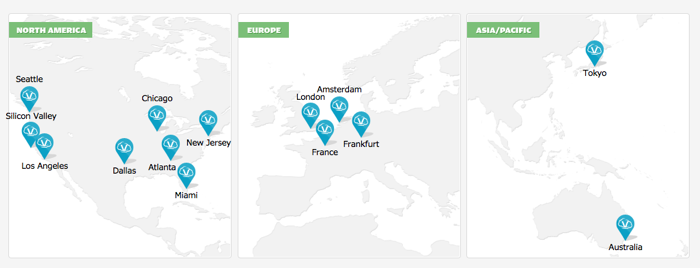

Vultr推出支付宝支付啦，任何新用户注册即送10美元！要知道，vultr最便宜的vps套餐只要2.5美元/月，足够你使用大半年！
vultr是一家全新的VPS提供商。vultr家的服务器采用的E3的CPU，清一色的Intel的SSD硬盘。只要你下了订单，系统将在你选择的数据中心里60秒内为你部署好VPS。
vultr的服务器托管在全球6个国家12个数据中心，即时开通使用。强大的客服团队，出色的在线支持。
ping及下载测试地址：点击查看.
A：CentOS 6 x64, CentOS 6 i386, CentOS 5 x64, CentOS 5 i386, CentOS 7 x64, Ubuntu 14.04 x64, Ubuntu 14.04 i386, Ubuntu 12.04 x64, Ubuntu 12.04 i386, Debian 7 x64 (wheezy), Debian 7 i386 (wheezy), FreeBSD 10 x64, Windows 2012 R2 x64。允许用户自行上传ISO。
A：先用后付。下个月1号扣费。超出使用的流量也会计算在内，按小时计费，直至每月封顶价格（即月付用户价格)。已经关机的VPS还会扣费，只有删除VPS才停止计费。